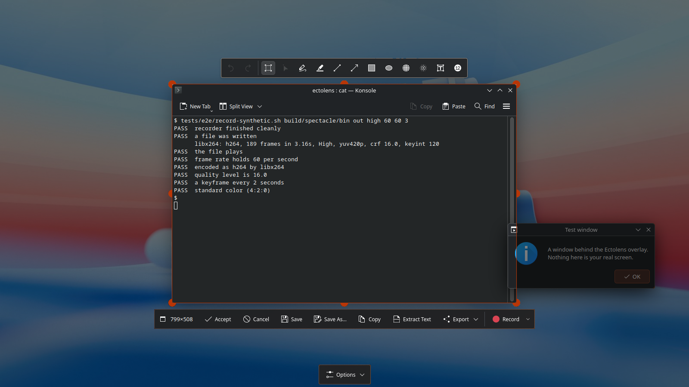
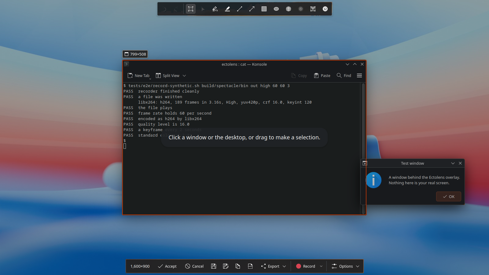
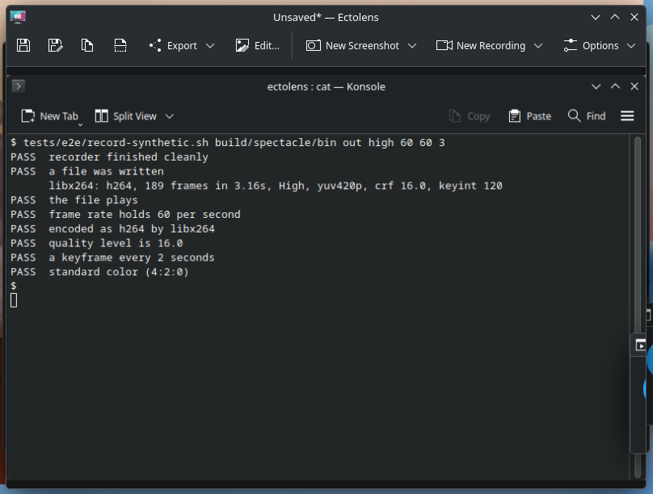
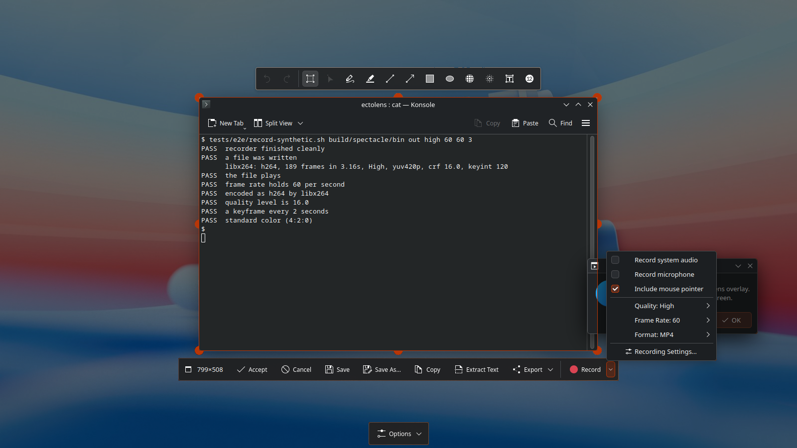
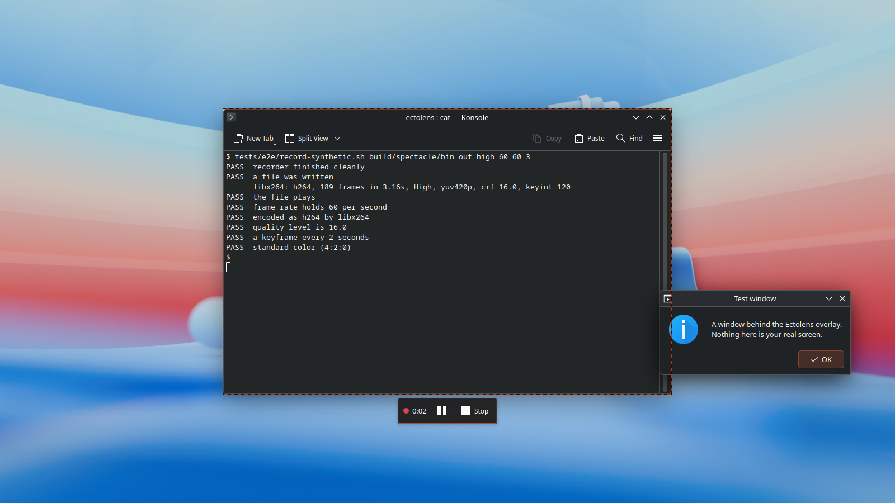

Capture and Record side by side, everything else at the frame
The same moment twice: Konsole has just been taken by clicking it. Above, Ectolens as installed now. Below, the proposal.
Today a real capture

Proposed
- 1Capture and Record, side by side. The two results of one frame sit together at the start of the row, each with an arrow for its choices. Capture's arrow lists what happens after a capture (copy, save, open with an app, share, print, show in folder), which takes in everything Export did, so Export goes away.
- 2Enter finishes the job. It captures: the picture goes to your clipboard, the overlay closes, and KDE's notification shows what you took, with Save if you want the file too. Today, with your settings, Enter opens a second window and you copy or save from there.
- 3The frame label sets the size. It starts the tools row above the frame, so what you took sits right over it. Click it and choose a size: pick 1920×1080 on a window and the window resizes to it, then goes back afterward.
- 4Room for new tools. After Capture and Record, the row holds tools that work on the picture, starting with Extract Text. Section 05 has ideas for more.
Today: Print Screen, click, Copy, then close the window that opens. Proposed: Print Screen, click, Enter.
Counted in the captures: 14 tools and 10 buttons today; the Options gear on the hint line proposed.
Today: 9 under the frame and Options at the bottom. Accept, Save, Copy and Export fold into Capture and its arrow; Options becomes a gear at the end of the row, and Cancel moves into its menu.
Above the frame, what it is and how to mark it. Below it, what to make of it.
At full size, in the design system's tokens, with KDE's own icons.
- 1Frame label, at the start of the tools row: the window's icon and the size, a screen icon for a whole screen, only the size for an area you drew. The name is left off; the icon already says which app it is. Its arrow opens the size menu (step 3).
- 2Marking tools, in Spectacle's order with a gap between kinds: undo and redo, crop and select, lines, shapes, hiding, then text and numbers. The tool in use carries the accent line; undo and redo stay faint until there is something to undo.
- 3The frame, drawn in the accent. Its handles are Spectacle's three-quarter and half circles, curving smoothly into the line instead of stopping in a notch. Dimming works as today.
- 4Capture and Record, the two results, together. Each arrow opens its choices: Capture's menu (step 4) and Record's panel (step 5).
- 5Picture tools: Extract Text, with its arrow for the language, which used to sit in Export. This is where new tools go.
- 6Options, the gear that ends the bottom row. It opens today's Options menu with Close at the bottom, so cancelling lives there now, and Esc still cancels.
From Print Screen to done, to a set size, and to a recording
Each step at full size, with today's real capture beside it where there is one.
Point
The window under the pointer stays bright, the rest dims, and its label sits above it, where the tools will appear, so you know what a click will take before you click. One line at the top says how to choose, and nothing covers the middle of your work. No tools yet: there is nothing to act on.

Enter, and you're done
Enter is Capture. The picture is on your clipboard and the overlay is gone. KDE's notification shows what you took, titled with the app and size, with Save for when you want the file and Annotate for when you want more.
Set the size
Click the frame label. Type a size or pick one. On a window, the window itself resizes so the capture is exactly that size, and it goes back when you're done. On an area you drew, the frame takes the size. Sizes that don't fit the screen are listed but can't be picked, with the reason.
Konsole grows from its top-left corner to 1920×1080, the frame follows it, and the picture is taken fresh at the new size. A recording made now is exactly 1920×1080.
Capture's menu
Capture's arrow is one list of what happens after a capture. Every row is a check, so they stack, and a choice at the end of the row says how. Open with, at the top, opens it in an app: Ectolens's own window first (what Accept opens today), then your image apps. Save to file puts it in Screenshots, or asks where each time. Copy to clipboard puts the image, or once there is a saved file, its path, on the clipboard. Share sends it on through KDE's share services. Show in folder opens the folder with the file picked out. An unchecked row dims its choice. Ctrl+Shift+S still opens Save As for a single capture.
File Path is locked until Save to file is checked, because a path needs a saved file to point to. That's why Save to file sits above Copy to clipboard, with Show in folder right under it: both need the saved file, so both stay locked until it's checked. Uncheck Save to file while File Path is chosen and Copy goes back to Image. If Save is set to ask where and you cancel that dialog, there is no file, so Ectolens copies the image instead and the notification says it wasn't saved.
The Ectolens window today, a real capture: Print Screen, Konsole clicked, Enter

This is what Open with › Ectolens opens: the capture large, in Ectolens's own window. Today it is also what Accept opens after Print Screen with your settings (checked off-screen with real key presses), and what you see when you start Ectolens from the app launcher.
Its toolbar, left to right: Save, Save As, Copy, Extract Text, Export (Open Default Screenshots Folder, Print, Open With, Share, Extract Text by Language), Edit for marking up, New Screenshot, New Recording and Options.
Print lives here, so it leaves the After Capture list. Simplified below the same way as the overlay.
Before and after the Ectolens window at the same size, holding the same capture
The Ectolens window, simplified with a capture, Save's arrow open, rows anchored to the sides
The same two rows as the overlay, docked to the window's edges. A window has sides, so its rows hold to them: each row's groups anchor to the left and right edges, and the picture sits between. The parts are the overlay's, so everything you learned there works here.
Above: the picture's size at the left, in gray because it is information, not a control, the marking tools in the middle, always out, so there is no Edit or Mark Up mode, and the gear at the right.
Below: at the left, what to do with this picture: Copy (its arrow picks Image or File Path), Save (its arrow holds Save As and Show in Folder, then Open With, Share and Print) and Extract Text. At the right, New Capture. New Capture opens the overlay, which already offers Capture and Record side by side, so one button replaces New Screenshot and New Recording; its arrow picks full screen, a window or a delay.
The status line is gone: the title bar already says Unsaved, and once saved it shows the file's name.
Today's toolbar: 10 controls in a strip. Simplified: 4 in the bottom row; the label, the overlay's tools and the gear above.
The Ectolens window, simplified opened from the launcher, nothing captured yet, New Capture's arrow open
Nothing to act on, so one thing to do: New Capture, in its place at the bottom right, and the gear at the top right. The label, the tools and the picture actions arrive with a capture.
The capture interface's own items leave the window. The frame label's size menu sizes a window before it is captured, so here the label is only the picture's size, without the app's icon. The capture options that sat in the Options menu (mouse pointer, titlebar and borders, shadow, delay) shape the next capture, so they move into New Capture's arrow, beside the kinds of capture. The gear holds Settings, with Help and About below it (gap 7).
The Ectolens window, every state each at the window's real size
Or choose what goes into a video
Record's arrow opens a panel in place of a menu with three submenus. Every choice is in view and takes one press, and your choices stay for next time.

Record
The frozen picture fades into the live screen and the frame becomes a dashed outline in the accent. The row keeps its place and holds the time, a Mic marker while the microphone is on, Pause and Stop, with Stop where Record was. Print Screen also stops it, as it does today.

The Ecto look, with your accent
Every value is read from the design system's source: src/app/globals.css for color and corners, components/ui/button.tsx for buttons, bits.tsx for the segmented control and chips. The accent is yours to choose in Settings › Appearance: it colors where you are (the frame, the window under the pointer, the tool in use, checked boxes) and never fills a button.
Surfaces and lines
bg #0a0a0abg-subtle #111113bg-muted #18181bbg-lift #2a2a2eborder #27272aborder-strong #3f3f46Text and signals
fg #fafafafg-muted #a1a1aafg-subtle #8b8b94brand #c8f22eerror #f87171Type and shape
Capture · Extract Text · Konsole
Geist Medium, 13.5 pixels, for every word on a button or label.
799×508 0:42
Geist Mono, 12 pixels, for sizes and time, so numbers hold still as they change.
Rows are fully round and 36 pixels tall; buttons are round and 28 pixels tall, the family's small size. Menus and panels keep the design system's 8-pixel corners or a little more. No button is filled.
Stays KDE's
Breeze icons, so a tool looks the same here as in every KDE app. Plasma draws the notification and Settings. Pointer shapes and keys stay as they are. The record dot stays red, because every recorder uses red for recording; it is the only red in Ectolens.
Settings › Appearance a new page, drawn in your Breeze, as the Settings window is
The same row in each accent
Ideas to cook up next to Extract Text
Each one works on the frozen picture or the frame, the way Extract Text does. They are ideas, not decided: pick the ones worth building and they join the row after Extract Text.
The same two rows on any frame
Two rules place them everywhere. Each row is centered on the frame and slides sideways only as far as it must to stay on screen. A row with no room on its side of the frame moves just inside that edge. The rows never swap sides, so the tools are always above and the actions always below.
Options, keys and touch
The gear at the end of the bottom row opens today's Options menu, word for word, minus its Recording Settings part, which moved into Record's panel, plus Close at the bottom.
Taking all screens
While you point, Enter captures all screens. The line at the top says so, so no bar is needed for it.
Keys stay as they are
Enter to capture, Esc to cancel, Ctrl+C to copy only, Ctrl+S to save only, Ctrl+Shift+S to save as, R to record. Print Screen stops a recording. Hovering a button shows its key.
Pointer shapes stay as they are
A crosshair outside the frame to draw a new one, resize arrows on its handles, an open hand inside it that closes while you move it, and the plain arrow over the rows.
Touch
Handles grow for a finger, as they do today. A finger cannot point first, so a tap takes the window under it and shows its label, the way a click does.
What changes in the code
- The tokens go in one QML file copied from the design system's
globals.cssandbutton.tsx, with the source named; every overlay part draws from it, and the accent is a setting. Geist and Geist Mono ship inside Ectolens under the SIL Open Font License 1.1; that is a new dependency and needs your yes. - The overlay (
CaptureOverlay.qml): the frame label at the start of the tools row, the two rows placed by the rules in section 06, the top line while pointing, Capture and Record as split buttons, and Options as a gear at the end of the bottom row, with Close in its menu. The centered hint, the bar shown before choosing, Export and the separate Options button go. - Capture: the default becomes copy only (you mostly copy), with saving one check away, set from Capture's menu or Settings › General. After a capture from Print Screen the overlay closes instead of opening the Ectolens window (
SpectacleCore::showViewerIfGuiMode). Export's items become checks in Capture's After Capture list (Open with, Share, Print, Show in folder), and Open in Ectolens becomes the first app under Open with; Extract Text by Language becomes Extract Text's arrow. - Set the size: a window is resized through KWin's scripting, which Ectolens can load over D-Bus as the off-screen tests already do (a window's
frameGeometrycan be set). The size counts what the capture includes, so with titlebar and borders on, 1920×1080 includes them. The overlay retakes the frozen picture after the resize, and the window's old size comes back after the capture or recording. A window that refuses a size says so in the menu. - Settings › Appearance: look (Ecto or your KDE colors), accent (Ecto green, your KDE accent, or a color you pick) and how dark the rest of the screen gets.
- The notification takes the app's name and the size as its title and says “Copied to the clipboard.” Its Save button writes the picture to Screenshots (Ectolens keeps the picture until the notification closes), and then it says where the file went and offers Open. Annotate stays.
- The Record panel is a popup drawn inside the overlay and replaces the Record menu.
- The off-screen tests (tour, input, settings, launch) move to the new layout. New runs: Print Screen's own start, Enter leaving no window open, and a window resized to a set size and put back.
- Windows 11's Snipping Tool copies every capture to the clipboard and keeps saving as its own setting; here copying is the default and saving is one click away on the notification. elevenforum.com
- macOS's Screenshot toolbar keeps Record beside its picture choices and puts where captures are saved in a menu. Apple, Macworld
- KDE's own forum, “Redesign Spectacle”: people found unlabeled icons hard to read and wanted actions as first-class buttons. So the actions keep their words. discuss.kde.org/t/redesign-spectacle
- KWin's scripting API for resizing a window: develop.kde.org/docs/plasma/kwin/api
- Ectonomic's design system: the colors, corners, button drawing, segmented control, chips and the rule that the accent marks where you are.
- Review notes on this mock: no Enter on the button, a menu on Capture, Capture and Record together, new tools like Extract Text, the label apart from the tools and setting the size, and accent choices.